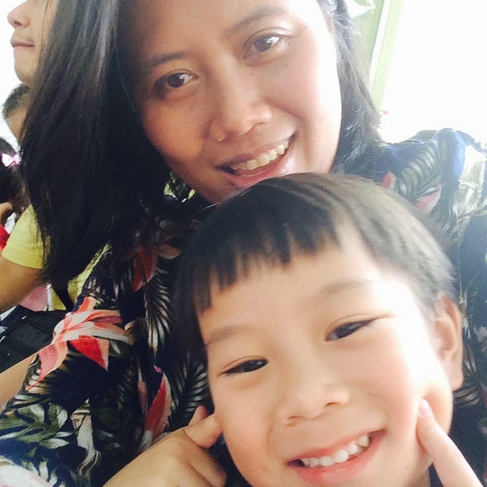
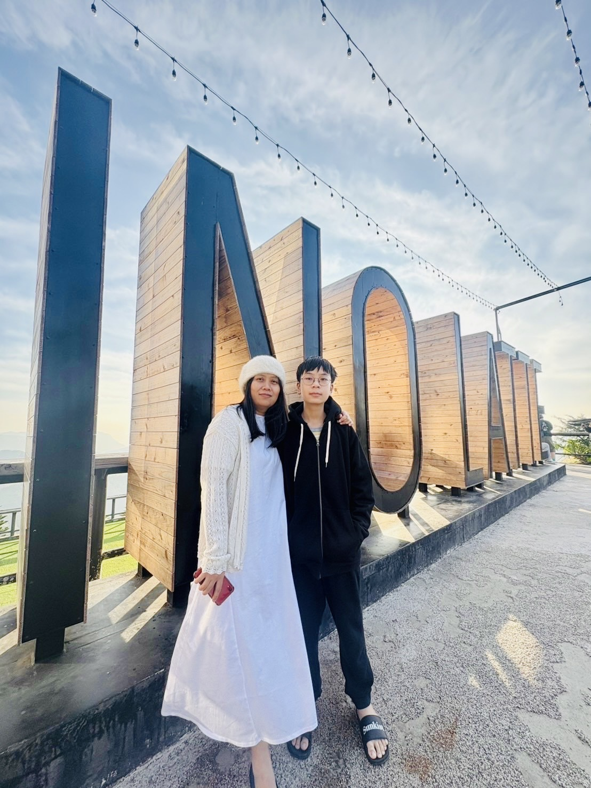
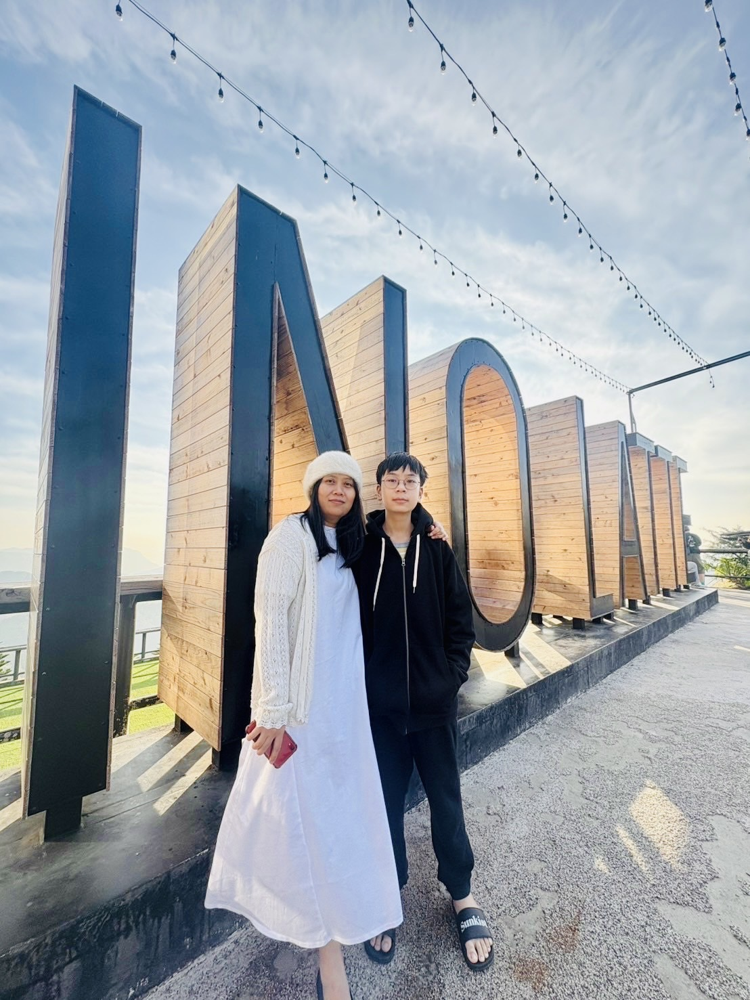

❤วันแม่แห่งชาติ💕
สิ่งที่อยากบอกแม่
แม่ผมเกิดวันที่ 19 พฤศจิกายน ตอนนี้แม่ผมมีอายุ 47 ปี ตั้งแต่ผมได้กำเนิดมาแม่ผมคอยดูแลเอาใจใส่ผมเป็นอย่างดี คอยให้ความรักผมและทำให้ผมมีความสุขมาก ผมอยากขอบคุณแม่มากที่ทำเพื่อผม ผมรักแม่ที่สุด ถึงบางครั้งแม่ผมจะดุหรือว่าผมบ้างผมก็ยังจะรักและดูแลแม่เสมอไปนะครับ

 

บทกลอนมอบให้แม่
ใจดวงนี้ลูกมีรักให้กับแม่จะช่วยเหลือและดูแลไม่ห่างหาย
ลูกจะทำให้คุณแม่สุขสบาย
หนทางไกลจะฝ่าฟันเพื่อแม่เอย
บทเพลงที่มอบให้แม่